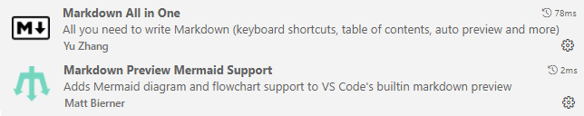
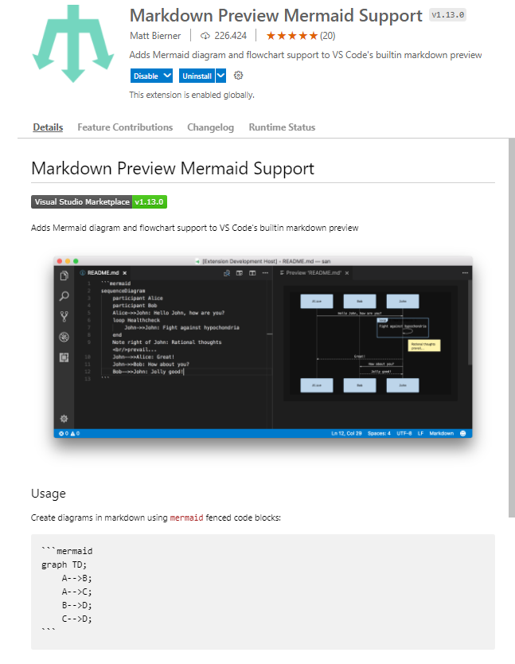

Mermaid en Visual Studio CodeMermaid en Visual Studio Code


graph TD;
A-->B;
A-->C;
B-->D;
C-->D;
flowchart TB
c1-->a2
subgraph one
a1-->a2
end
subgraph two
b1-->b2
end
subgraph three
c1-->c2
end
one --> two
three --> two
two --> c2
flowchart TD
A[Start] --> B{Is it?};
B -- Yes --> C[OK];
C --> D[Rethink];
D --> B;
B -- No ----> E[End];
graph TB
sq[Square shape] --> ci((Circle shape))
subgraph A
od>Odd shape]-- Two line
edge comment --> ro
di{Diamond with
line break} -.-> ro(Rounded
square
shape)
di==>ro2(Rounded square shape)
end
%% Notice that no text in shape are added here instead that is appended further down
e --> od3>Really long text with linebreak
in an Odd shape]
%% Comments after double percent signs
e((Inner / circle
and some odd
special characters)) --> f(,.?!+-*ز)
cyr[Cyrillic]-->cyr2((Circle shape Начало));
classDef green fill:#9f6,stroke:#333,stroke-width:2px;
classDef orange fill:#f96,stroke:#333,stroke-width:4px;
class sq,e green
class di orange
pie
title Key elements in Product X
"Calcium" : 42.96
"Potassium" : 50.05
"Magnesium" : 10.01
"Iron" : 5
sequenceDiagram
participant Alice
participant Bob
Alice->>John: Hello John, how are you?
loop Healthcheck
John->>John: Fight against hypochondria
end
Note right of John: Rational thoughts
prevail!
John-->>Alice: Great!
John->>Bob: How about you?
Bob-->>John: Jolly good!
sequenceDiagram
participant Alice
participant John
rect rgb(191, 223, 255)
note right of Alice: Alice calls John.
Alice->>+John: Hello John, how are you?
rect rgb(200, 150, 255)
Alice->>+John: John, can you hear me?
John-->>-Alice: Hi Alice, I can hear you!
end
John-->>-Alice: I feel great!
end
Alice ->>+ John: Did you want to go to the game tonight?
John -->>- Alice: Yeah! See you there.
sequenceDiagram
loop Daily query
Alice->>Bob: Hello Bob, how are you?
alt is sick
Bob->>Alice: Not so good :(
else is well
Bob->>Alice: Feeling fresh like a daisy
end
opt Extra response
Bob->>Alice: Thanks for asking
end
end
MARCADO
gantt
dateFormat YYYY-MM-DD
title Adding GANTT diagram to mermaid
excludes weekdays 2014-01-10
section A section
Completed task :done, des1, 2014-01-06,2014-01-08
Active task :active, des2, 2014-01-09, 3d
Future task : des3, after des2, 5d
Future task2 : des4, after des3, 5d
gantt
dateFormat YYYY-MM-DD
title Adding GANTT diagram functionality to mermaid
excludes weekends
%% (`excludes` accepts specific dates in YYYY-MM-DD format, days of the week ("sunday") or "weekends", but not the word "weekdays".)
section A section
Completed task :done, des1, 2014-01-06,2014-01-08
Active task :active, des2, 2014-01-09, 3d
Future task : des3, after des2, 5d
Future task2 : des4, after des3, 5d
section Critical tasks
Completed task in the critical line :crit, done, 2014-01-06,24h
Implement parser and jison :crit, done, after des1, 2d
Create tests for parser :crit, active, 3d
Future task in critical line :crit, 5d
Create tests for renderer :2d
Add to mermaid :1d
Functionality added :milestone, 2014-01-25, 0d
section Documentation
Describe gantt syntax :active, a1, after des1, 3d
Add gantt diagram to demo page :after a1 , 20h
Add another diagram to demo page :doc1, after a1 , 48h
section Last section
Describe gantt syntax :after doc1, 3d
Add gantt diagram to demo page :20h
Add another diagram to demo page :48h
stateDiagram-v2
[*] --> Still
Still --> [*]
Still --> Moving
Moving --> Still
Moving --> Crash
Crash --> [*]
stateDiagram-v2
[*] --> First
state First {
[*] --> second
second --> [*]
}
stateDiagram-v2
[*] --> First
state First {
[*] --> Second
state Second {
[*] --> second
second --> Third
state Third {
[*] --> third
third --> [*]
}
}
}
stateDiagram-v2
[*] --> First
First --> Second
First --> Third
state First {
[*] --> fir
fir --> [*]
}
state Second {
[*] --> sec
sec --> [*]
}
state Third {
[*] --> thi
thi --> [*]
}
stateDiagram-v2
state if_state <>
[*] --> IsPositive
IsPositive --> if_state
if_state --> False: if n < 0
if_state --> True : if n >= 0
stateDiagram-v2
state fork_state <>
[*] --> fork_state
fork_state --> State2
fork_state --> State3
state join_state <>
State2 --> join_state
State3 --> join_state
join_state --> State4
State4 --> [*]
stateDiagram-v2
[*] --> Active
state Active {
[*] --> NumLockOff
NumLockOff --> NumLockOn : EvNumLockPressed
NumLockOn --> NumLockOff : EvNumLockPressed
--
[*] --> CapsLockOff
CapsLockOff --> CapsLockOn : EvCapsLockPressed
CapsLockOn --> CapsLockOff : EvCapsLockPressed
--
[*] --> ScrollLockOff
ScrollLockOff --> ScrollLockOn : EvScrollLockPressed
ScrollLockOn --> ScrollLockOff : EvScrollLockPressed
}
classDiagram
Class01 <|-- AveryLongClass : Cool
Class03 *-- Class04
Class05 o-- Class06
Class07 .. Class08
Class09 --> C2 : Where am i?
Class09 --* C3
Class09 --|> Class07
Class07 : equals()
Class07 : Object[] elementData
Class01 : size()
Class01 : int chimp
Class01 : int gorilla
Class08 <--> C2: Cool label
classDiagram
classA --|> classB : Inheritance
classC --* classD : Composition
classE --o classF : Aggregation
classG --> classH : Association
classI -- classJ : Link(Solid)
classK ..> classL : Dependency
classM ..|> classN : Realization
classO .. classP : Link(Dashed)
classDiagram
direction RL
class Student {
-idCard : IdCard
}
class IdCard{
-id : int
-name : string
}
class Bike{
-id : int
-name : string
}
Student "1" --o "1" IdCard : carries
Student "1" --o "1" Bike : rides
requirementDiagram
requirement test_req {
id: 1
text: the test text.
risk: high
verifymethod: test
}
element test_entity {
type: simulation
}
test_entity - satisfies -> test_req
requirementDiagram
requirement test_req {
id: 1
text: the test text.
risk: high
verifymethod: test
}
functionalRequirement test_req2 {
id: 1.1
text: the second test text.
risk: low
verifymethod: inspection
}
performanceRequirement test_req3 {
id: 1.2
text: the third test text.
risk: medium
verifymethod: demonstration
}
interfaceRequirement test_req4 {
id: 1.2.1
text: the fourth test text.
risk: medium
verifymethod: analysis
}
physicalRequirement test_req5 {
id: 1.2.2
text: the fifth test text.
risk: medium
verifymethod: analysis
}
designConstraint test_req6 {
id: 1.2.3
text: the sixth test text.
risk: medium
verifymethod: analysis
}
element test_entity {
type: simulation
}
element test_entity2 {
type: word doc
docRef: reqs/test_entity
}
element test_entity3 {
type: "test suite"
docRef: github.com/all_the_tests
}
test_entity - satisfies -> test_req2
test_req - traces -> test_req2
test_req - contains -> test_req3
test_req3 - contains -> test_req4
test_req4 - derives -> test_req5
test_req5 - refines -> test_req6
test_entity3 - verifies -> test_req5
test_req <- copies - test_entity2
gitGraph:
options
{
"nodeSpacing": 150,
"nodeRadius": 10
}
end
commit
branch newbranch
checkout newbranch
commit
commit
checkout master
commit
commit
merge newbranch
erDiagram
CUSTOMER ||--o{ ORDER : places
ORDER ||--|{ LINE-ITEM : contains
CUSTOMER }|..|{ DELIVERY-ADDRESS : uses
erDiagram
CUSTOMER ||--o{ ORDER : places
CUSTOMER {
string name
string custNumber
string sector
}
ORDER ||--|{ LINE-ITEM : contains
ORDER {
int orderNumber
string deliveryAddress
}
LINE-ITEM {
string productCode
int quantity
float pricePerUnit
}
erDiagram
CAR ||--o{ NAMED-DRIVER : allows
CAR {
string registrationNumber
string make
string model
}
PERSON ||--o{ NAMED-DRIVER : is
PERSON {
string firstName
string lastName
int age
}
journey
title My working day
section Go to work
Make tea: 5: Me
Go upstairs: 3: Me
Do work: 1: Me, Cat
section Go home
Go downstairs: 5: Me
Sit down: 5: Me